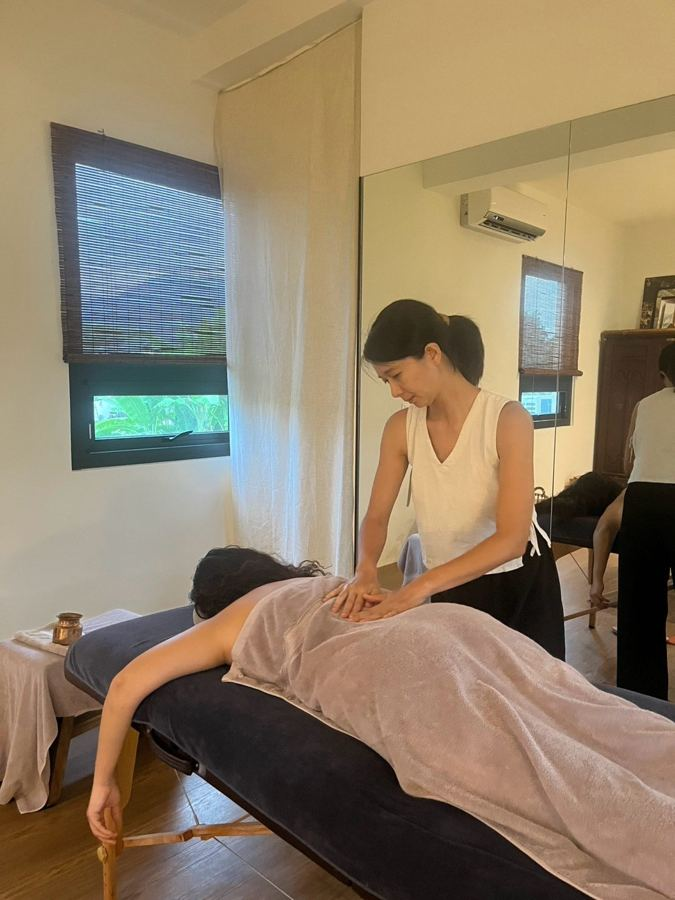

1 小時
精簡呵護
NT$2,800
時間不多也能好好被照顧。從兩種組合中選一種：
- 收回身體 關骨儀式＋束腹（產後 4 週以上）
- 溫熱放鬆 藥草球（背部・腿部）＋束腹
適合：寶寶還小、時間很難挪出來，想先體驗看看的媽媽
阿育吠陀產後呵護
一段約 3.5 小時、只屬於妳的完整產後身體呵護

回答幾個問題，下面會自動挑出適合這個階段的項目。
八種療程
選擇妳的節奏
產後的身體是一點一點回來的。包套會依妳的產後週數和狀況，由輕到深、由局部到全身，安排不同的呵護，每次都有新的重點。
1 小時
NT$2,800
時間不多也能好好被照顧。從兩種組合中選一種：
適合：寶寶還小、時間很難挪出來，想先體驗看看的媽媽
單次
NT$7,800實習價限量・私訊詢問
適合：想先體驗看看、時間比較難安排的媽媽
3 次包套
NT$13,800每次約 4,600
每次：溫油按摩 60 分＋溫熱療法 40 分＋收尾呵護 1 項
適合：腰背痠痛、怕冷，想有感改善的媽媽
5 次包套・最完整
NT$21,800每次約 4,360
每次：溫油按摩 60 分＋溫熱療法 40 分＋收尾呵護 1 項
適合：產後 3 個月內、不適比較多，或想好好走完整個修復期的媽媽
可加在任一方案中，不單獨預約。
包套每次都包含溫油按摩，再搭配一項溫熱療法（熱石熱磚、鹽罐熱敷、藥草球）和一項收尾呵護（關骨儀式、會陰薰蒸、束腹、藥草浴）。以上是建議安排，實際會依妳的產後週數、分娩方式和當天狀況調整（例如產後第 1 週先從藥草足浴、會陰薰蒸、束腹開始）。以上為定價；實習優惠價僅適用單次完整體驗（限 5 位），1 小時精簡與包套不適用。到府交通費另計。
♡ 陪產家庭禮遇：曾與我一起走過孕期（簽約陪產陪伴方案）的媽媽，產後 6 個月內，以上方案享定價 9 折（加購項目依定價，不與實習價併用）。
實習優惠名額 剩 3 位／共 5 位
@birthwithmilliya收到後我會在 1–2 天內親自回覆妳 🌿